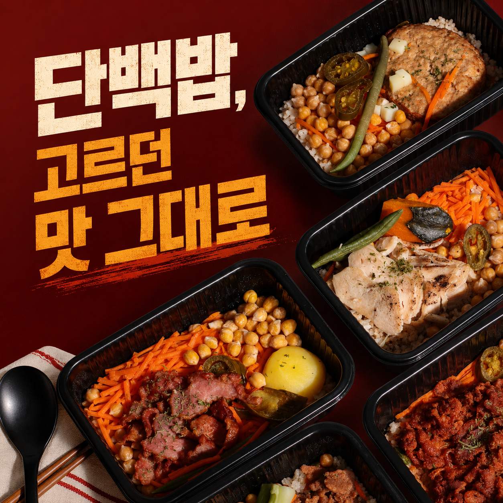
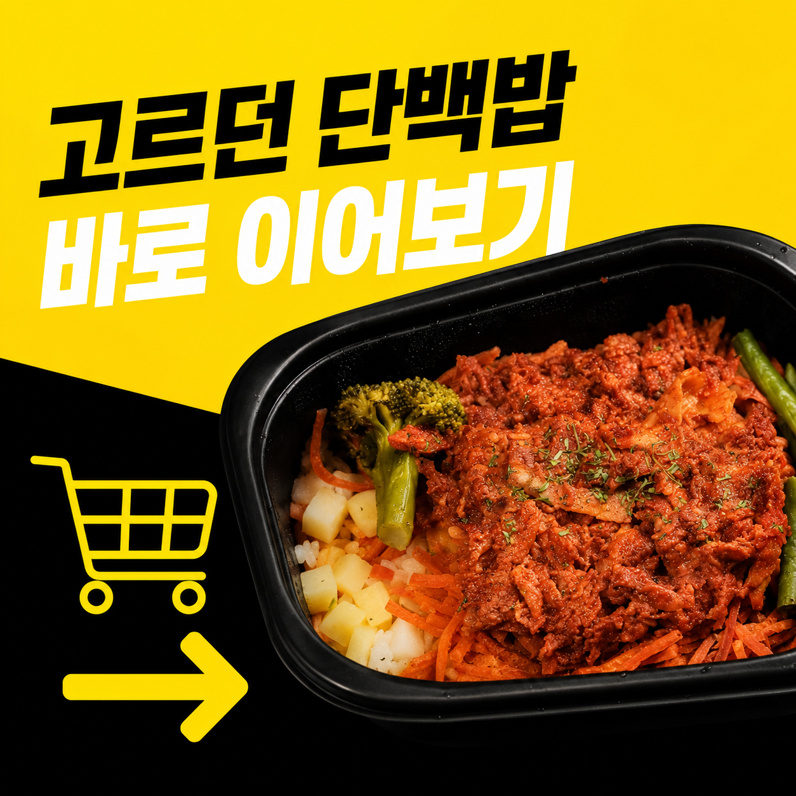
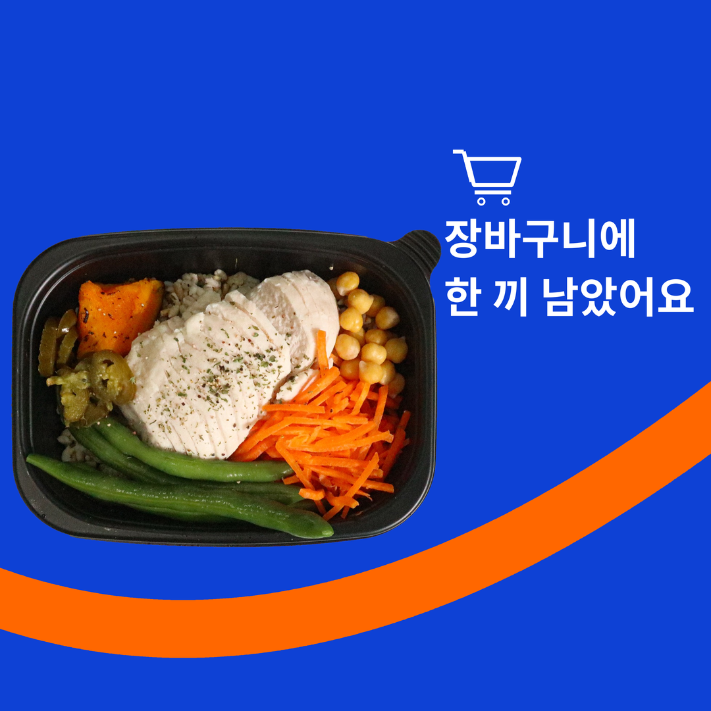
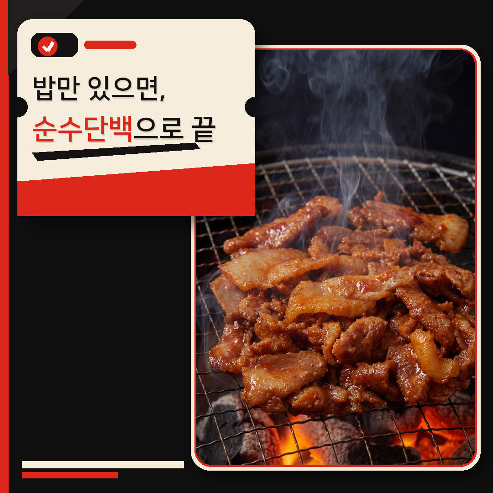
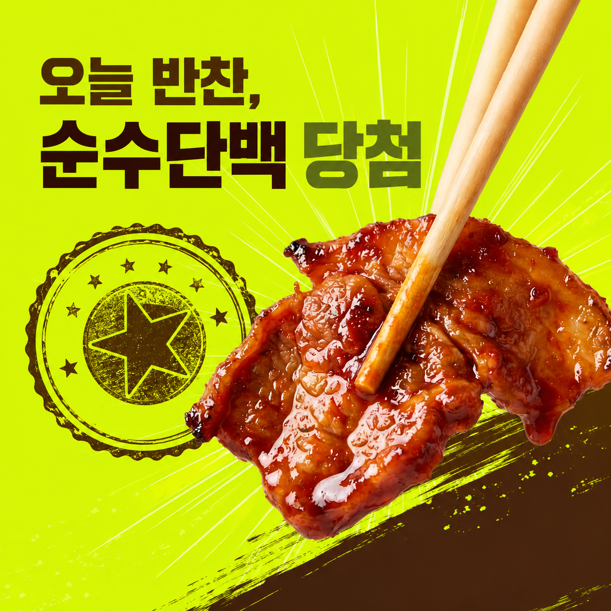
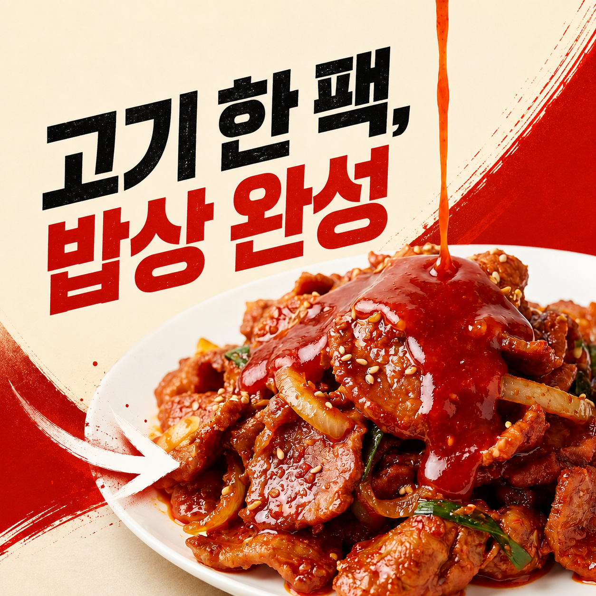
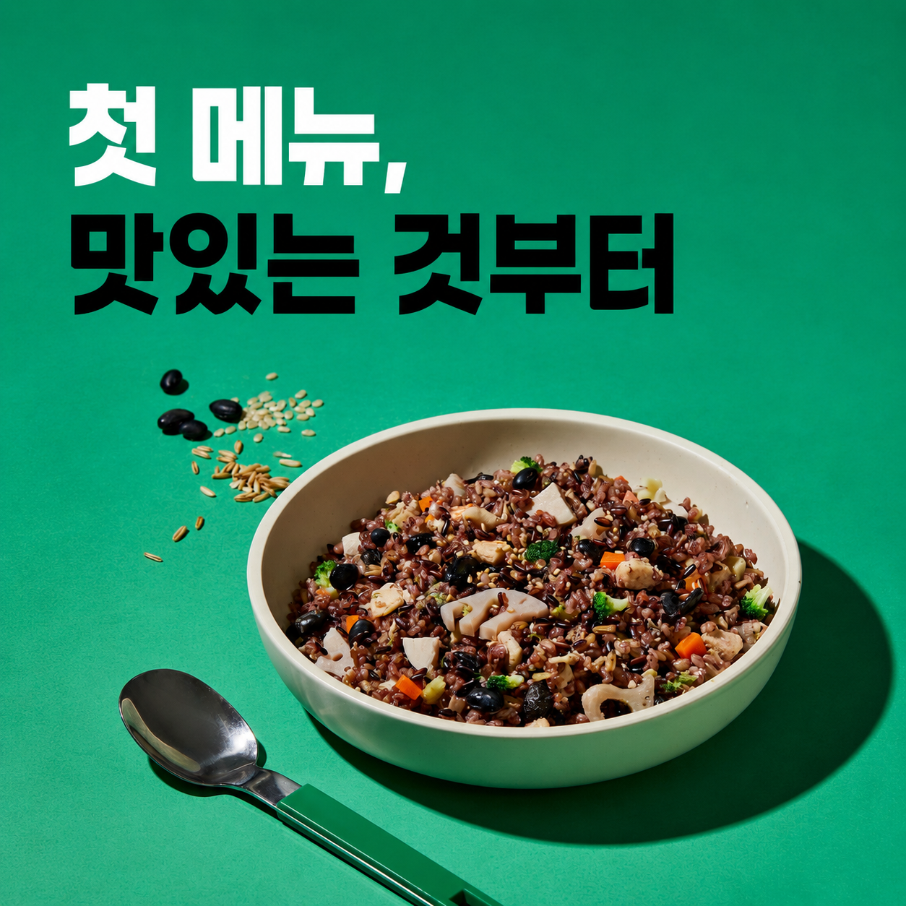
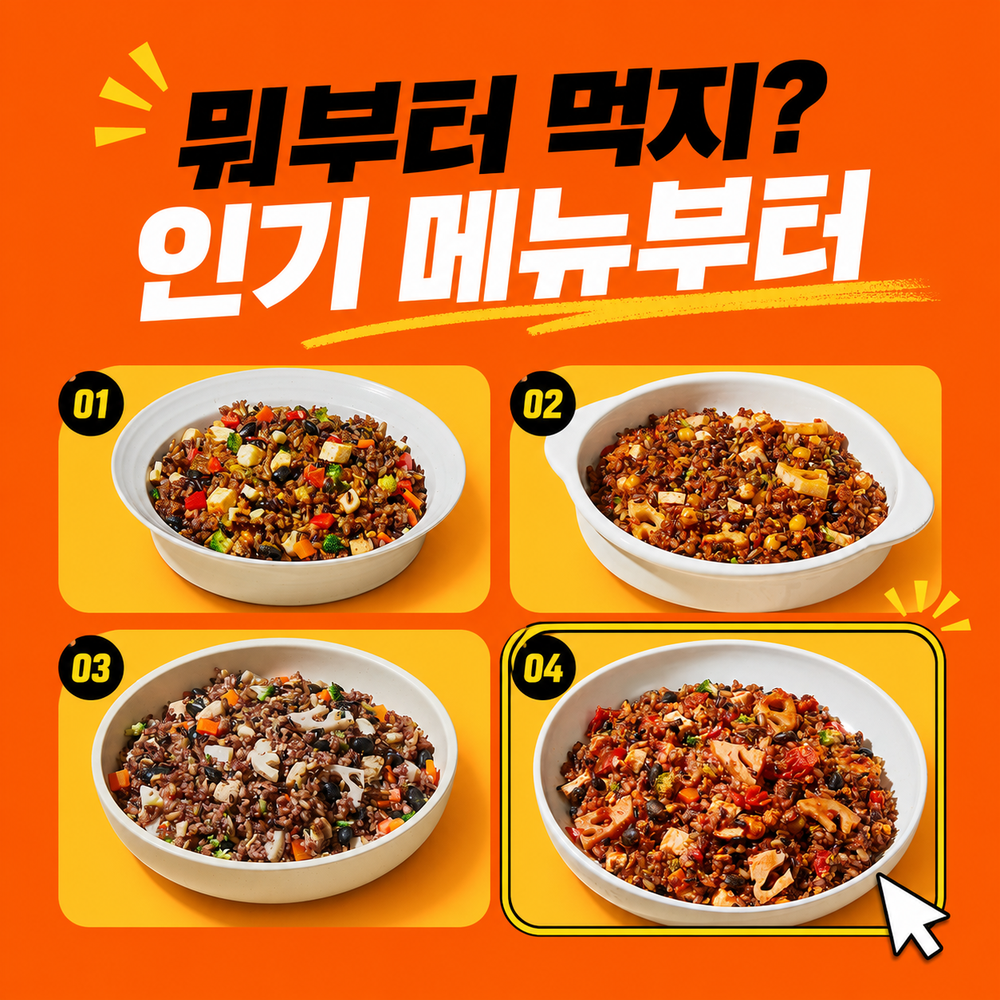
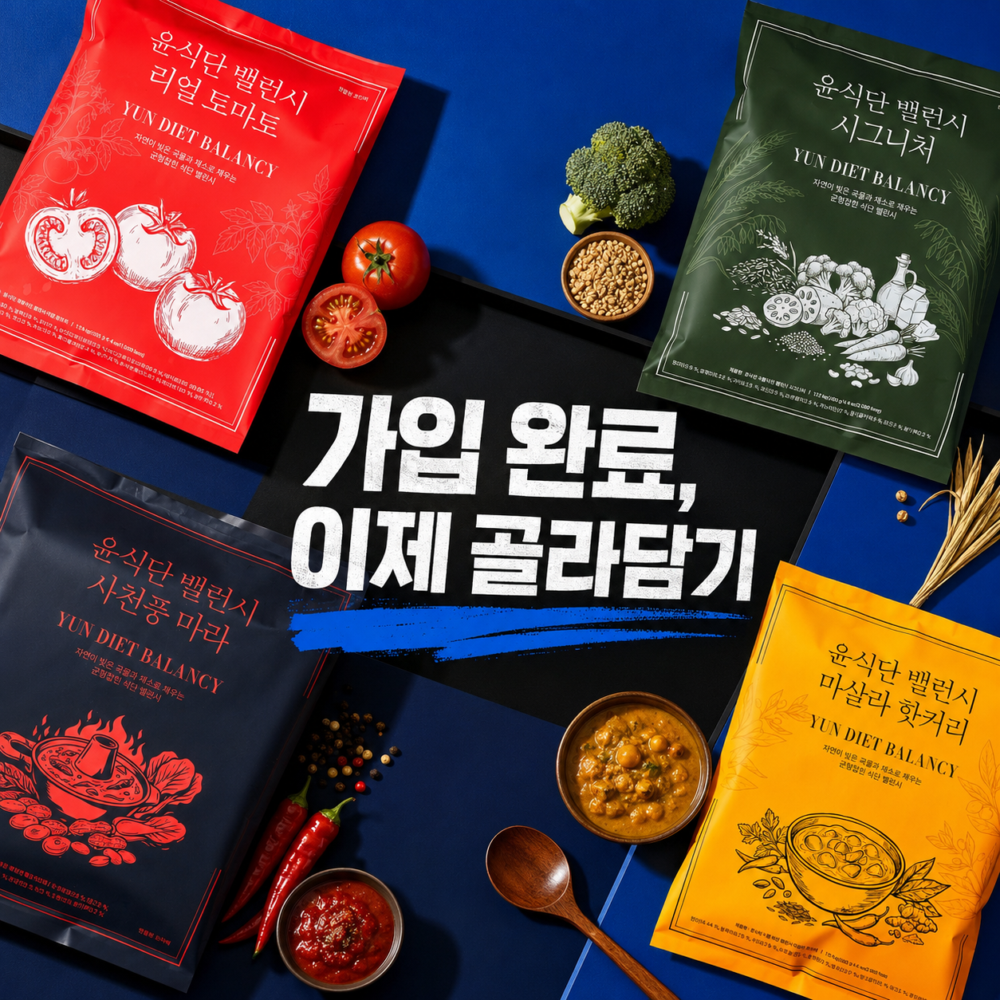

A안맛 기억 복귀형

한끼통살의 짧고 직접적인 메뉴·행동 훅, 랩노쉬의 강한 컬러 블록과 제품·푸드 중심 편집 원칙을 윤식단 CRM에 맞게 재해석했습니다. 9개 소재는 서로 다른 표현 방식으로 구성했고, 이미지·카피·상품·랜딩·고객 수신 화면을 한곳에서 비교할 수 있습니다.
고르던 맛과 장바구니 복귀 행동을 바로 연결



밥상 고민보다 먹고 싶은 고기 한 점을 먼저 제시



환영 인사보다 첫 메뉴 선택을 쉽고 재미있게 제시


